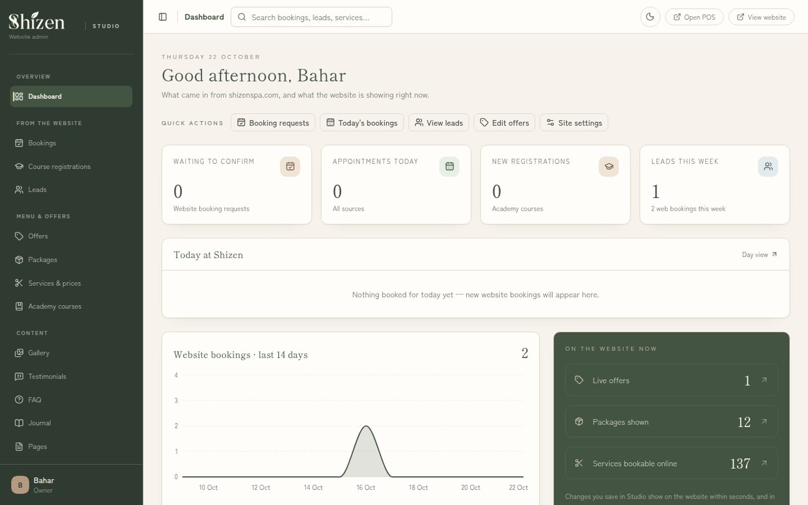
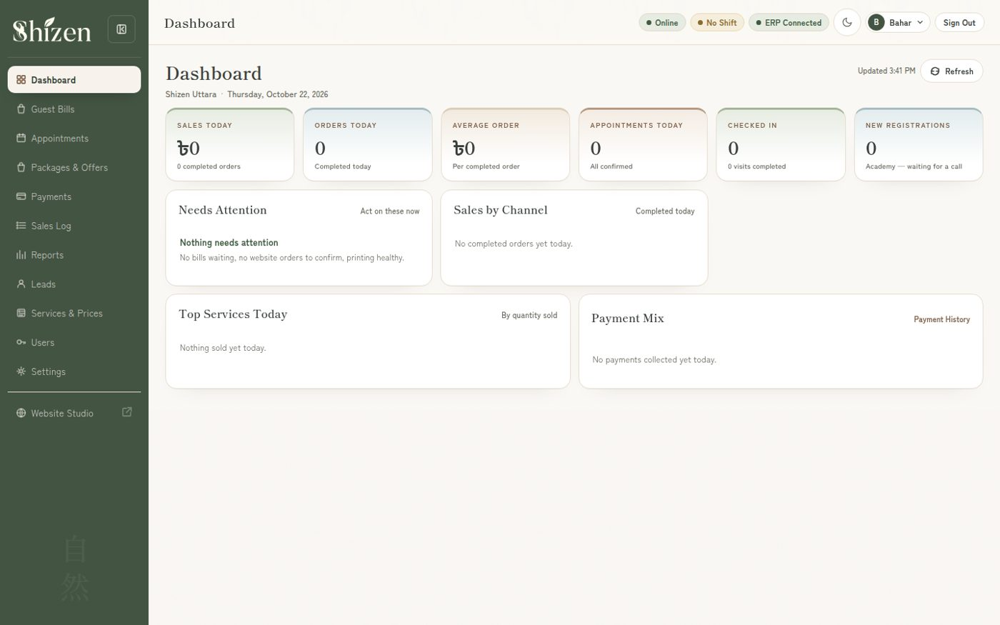
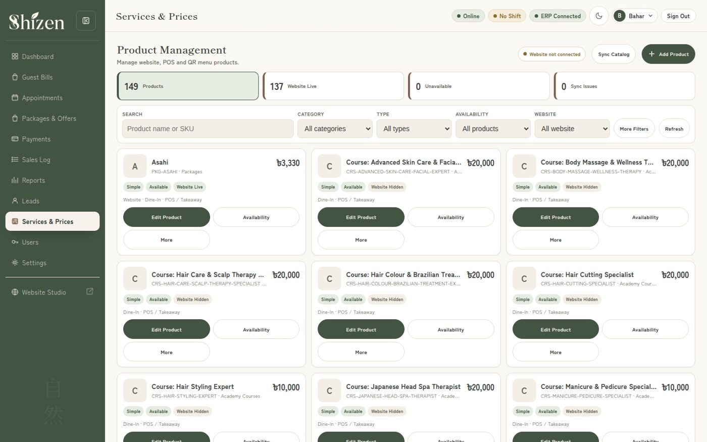

A complete operating system for a spa business: public website with online booking, a full admin studio, web POS and Windows desktop POS — one catalog of 149 products feeding the website, the counter and takeaway channels.

Shizen is a Japanese-inspired spa and salon in Uttara, Dhaka. When I took over its technology in January 2026, bookings, billing and the website lived in separate places: staff confirmed appointments from one screen, billed from another, and the website's services and prices had to be updated by hand. The business needed one system of record — change a price once, and have it correct everywhere a customer or a cashier sees it.
I built that system as a single platform on Frappe and ERPNext with a Next.js public website. The website takes bookings and course registrations and presents the full service menu. Behind it, the Studio admin manages bookings, leads, offers, packages, services and prices, academy courses, gallery, testimonials and all site content — and every change goes live on the website within seconds. At the counter, a web POS handles guest bills, appointments, payments and staff shifts, and a Windows desktop POS serves the shop PC against the same backend.
The detail that holds it together is the unified catalog: 149 products are managed once and published to the website, the POS and takeaway channels, each with per-channel availability and its own live flag. Bills can start from a walk-in, a phone call, Facebook or WhatsApp. An OTP-based password-reset flow protects staff accounts, and booking confirmations go out by email and SMS from the business's own self-hosted mail server, which I also set up and maintain on the same VPS.
The platform is not a finished hand-off: I continue to run it — deployments, server care, backups and the daily stream of small changes a living business asks for. That continuity is the point of the design: one person who knows how every screen connects to every number.


